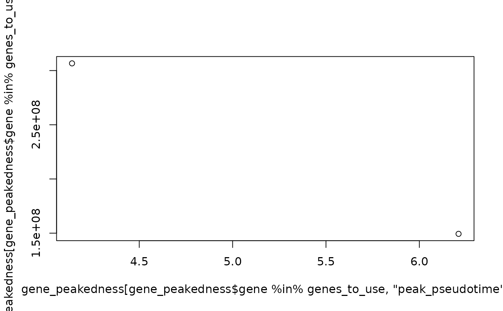
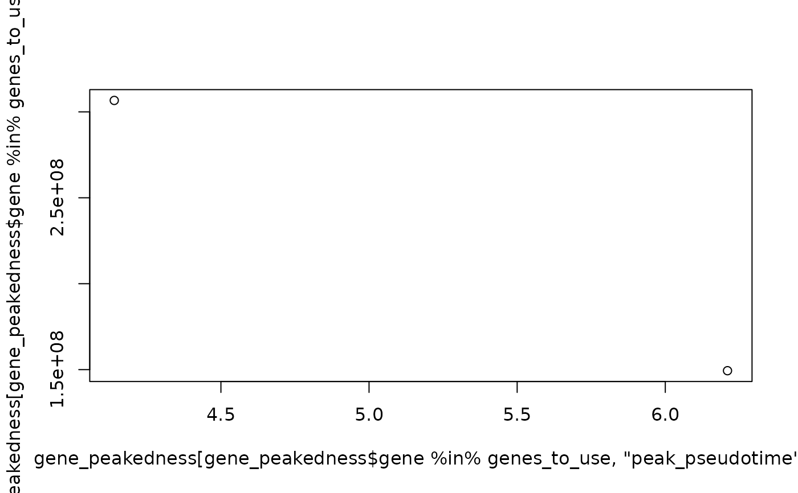

calculate_gene_peakedness
calculate_gene_peakedness.RdCalculate the peakedness of a gene. The power is the ratio of the mean of reads 5% either side of the smoothed peak of the gene's expression over pseudotime against the mean of the reads outside of this.
Usage
calculate_gene_peakedness(
sce,
window_pct = 10,
pseudotime_slot = "slingPseudotime_1",
knots = 10,
BPPARAM = BiocParallel::SerialParam()
)Arguments
- sce
SCE to do the calculations on.
- window_pct
the size of the window to consider, as a percentage of the maximum pseudotime value.
- pseudotime_slot
The slot in the SCE object containing pseudotime
- knots
The number of knots to use when fitting the GAM
- BPPARAM
The BiocParallel parameter for parallelisation Defaults to BiocParallel::SerialParam.
Value
Dataframe, where each row is a gene, and the following columns: mean_expression_in_window, mean_expression_out_window, ratio
Examples
ncells <- 70
ngenes <- 100
# Each gene should have mean around its gene number
counts <- c()
for (i in seq_len(ngenes)) {
counts <- c(counts, dnorm(seq_len(ncells), mean = (ncells / i), sd = 1))
}
counts_matrix <- matrix(
counts,
ncol = ncells,
nrow = ngenes
)
sce <- SingleCellExperiment::SingleCellExperiment(assays = list(
counts = counts_matrix * 3,
normcounts = counts_matrix,
logcounts = log(counts_matrix)
))
colnames(sce) <- paste0("cell", seq_len(ncells))
rownames(sce) <- paste0("gene", seq_len(ngenes))
sce$cell_type <- c(
rep("celltype_1", ncells / 2),
rep("celltype_2", ncells / 2)
)
sce$pseudotime <- seq_len(ncells) - 1
genelist <- rownames(sce)
# calculate_gene_peakedness
gene_peakedness <- calculate_gene_peakedness(
sce,
pseudotime_slot = "pseudotime"
)
#> Warning: Iteration limit reached without full convergence - check carefully
#> Warning: Iteration limit reached without full convergence - check carefully
#> Warning: Iteration limit reached without full convergence - check carefully
#> Warning: Fitting terminated with step failure - check results carefully
#> Warning: Iteration limit reached without full convergence - check carefully
#> Warning: Iteration limit reached without full convergence - check carefully
#> Warning: Iteration limit reached without full convergence - check carefully
#> Warning: Iteration limit reached without full convergence - check carefully
#> Warning: Fitting terminated with step failure - check results carefully
#> Warning: Fitting terminated with step failure - check results carefully
#> Warning: Iteration limit reached without full convergence - check carefully
#> Warning: Iteration limit reached without full convergence - check carefully
#> Warning: Iteration limit reached without full convergence - check carefully
head(gene_peakedness)
#> gene peak_pseudotime mean_in_window mean_out_window ratio
#> 100 gene1 69.00 1.060616e-24 0.037863935 2.801125e-23
#> 51 gene2 35.19 4.680824e-02 0.029379725 1.593216e+00
#> 27 gene3 18.63 4.327921e-02 0.014445463 2.996042e+00
#> 20 gene4 13.80 4.563543e-02 0.006531685 6.986777e+00
#> 1 gene5 0.69 7.978846e-02 0.004138929 1.927756e+01
#> 5 gene6 3.45 3.456725e-02 0.006114805 5.653041e+00
#> window_start window_end deviance_explained
#> 100 65.55 72.45 0.02680534
#> 51 31.74 38.64 0.01912609
#> 27 15.18 22.08 0.04505152
#> 20 10.35 17.25 0.58156238
#> 1 -2.76 4.14 0.21032129
#> 5 0.00 6.90 0.14902599
# plot_gene_peakedness
plot_gene_peakedness(sce, gene_peakedness, "gene20",
pseudotime_slot = "pseudotime"
)
#> Warning: Iteration limit reached without full convergence - check carefully
 # smooth_gene
smoothed_gene20 <- smooth_gene(
sce, "gene20",
pseudotime_slot = "pseudotime"
)
#> Warning: Iteration limit reached without full convergence - check carefully
head(smoothed_gene20)
#> 1 2 3 4 5 6
#> 2.220446e-16 2.220446e-16 2.220446e-16 2.220446e-16 2.220446e-16 2.220446e-16
# Select best spread of genes
genes_to_use <- gene_peakedness_spread_selection(sce, gene_peakedness,
genes_per_bin = 2, n_gene_bins = 1, pseudotime_slot = "pseudotime"
)
print(genes_to_use)
#> [1] "gene30" "gene40"
plot(
x = gene_peakedness[
gene_peakedness$gene %in% genes_to_use, "peak_pseudotime"
],
y = gene_peakedness[gene_peakedness$gene %in% genes_to_use, "ratio"]
)

# smooth_gene
smoothed_gene20 <- smooth_gene(
sce, "gene20",
pseudotime_slot = "pseudotime"
)
#> Warning: Iteration limit reached without full convergence - check carefully
head(smoothed_gene20)
#> 1 2 3 4 5 6
#> 2.220446e-16 2.220446e-16 2.220446e-16 2.220446e-16 2.220446e-16 2.220446e-16
# Select best spread of genes
genes_to_use <- gene_peakedness_spread_selection(sce, gene_peakedness,
genes_per_bin = 2, n_gene_bins = 1, pseudotime_slot = "pseudotime"
)
print(genes_to_use)
#> [1] "gene30" "gene40"
plot(
x = gene_peakedness[
gene_peakedness$gene %in% genes_to_use, "peak_pseudotime"
],
y = gene_peakedness[gene_peakedness$gene %in% genes_to_use, "ratio"]
)
